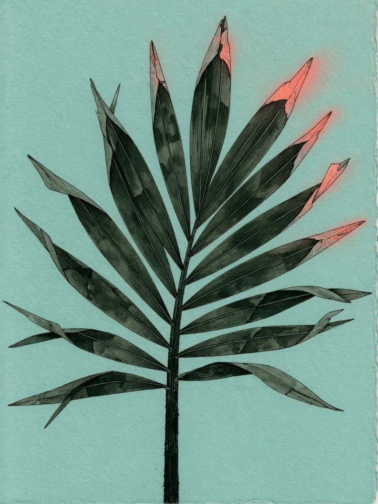

a git-native outliner
olai
An outliner that lives in files you own.
Indent, check off, search. Markdown sits beside the outline. Git records every edit.
nix run github:juspay/olai -- web path/to/outlinesone directory. a browser. that’s the whole install.

Compared to Workflowy and Dynalist
Same outlining model — indent, move, mirror, check off. The difference is where the data lives.
| Workflowy, Dynalist | olai | |
|---|---|---|
| Storage | A hosted database | Plain files in a directory you choose |
| Sync | Their cloud | git, or anything that moves files |
| History | In-app version history | git log |
| Search | Keyword, in their app | Filter the page you’re on, or search the whole directory |
| Source | Proprietary | Open source (AGPL-3.0) |
Outlines are ordinary files. The format spec is there if you want it.
What’s due
Dated work from every outline, on one page. Late things sit above today. A birthday isn’t a task — it stays on its day and never turns red. The calendar is a plugin.
5 days ago · Fri, Aug 7
Kitchen renovation
Today · Wed, Aug 12
Kitchen renovation
Sat, Aug 15in 3 days
Kitchen renovation
two quiet weeks
Fri, Aug 28in 2 weeks
Kitchen renovation
A file named for the day — 2026-08-12.md, anywhere in the directory — is that day’s note. Open the day and the note is on top, with everything dated that day underneath it.
Weekly chores come back as a fresh row on the next date, so eleven Mondays are eleven rows, not one row whose date kept moving.
Stay on the page
The box above the outline hides what doesn’t match. A tag you click does the same. The address holds the query, so a narrowed page is a link you can send.
Matches stay where they live. Ancestors stay so a bare title still makes sense.
Done, last week, a quoted phrase — the rest of the query language is in the search docs.
Type like an outliner
Click a title to edit it in place. Enter makes the next line. Tab indents. The rest is the usual outliner muscle memory.
| Enter | commit, and open the next line |
| Enter mid-line | split the row in two, there |
| Backspace at the start | join this row onto the one above |
| Tab / Shift+Tab | indent, or out again |
| Alt+Shift+↑/↓ | move a row among its siblings |
| ⌘+Z | take back your last edit here |
| ⌘+Enter | tick it off, or take that back |
| ⌘+⇧+Enter | walk the mark on: to do, then doing, then none |
| ⌘+⇧+D | duplicate the row, and everything under it |
| ⌘+⇧+M | move it under a node you search for, anywhere |
| Shift+Enter | write the note under it |
| Esc | drop what you were typing |
The full map — dragging, the palette, pins, the inbox — is in the editing docs.
How it looks
Eighteen palettes. Press a chip — this page follows.
An agent in the same notebook
Chat opens on the row it is about, and on that row’s page. You keep the keyboard. The agent ticks boxes and rewrites the markdown, and you see it happen. Git records both of you.
cabinets.md+3−2
+4 more lines
The page updates because the file on disk changed.
How to point an agent at a running olai is in the chat docs.
Plugins
The outline editor, the Markdown reader, the shell, chat, git, search — they are plugins. They show on one panel. Switch one off while olai is running; the rest keep going. The runtime is Cordis, a meta-framework of spatiotemporal composability. The paper is on arXiv.
▶Needs attention1
▶Agents4 on · 2 off
▶Notes18 on
▶Connections6 on · 1 off
▶Interface9 on
▶Serverlaptop
An agent can write one into your vault. You read the source on the panel and approve it. The worked example is a morning agenda: each morning it reads the day and puts it into the conversation. Read the morning agenda.
The vault carries your settings. A top-level node in
_olai/Settings.olai names each tool; its properties choose
how it behaves and whether it runs. The panel writes the same file.
See the
running docs.
| Plugin | Default | |
|---|---|---|
| chat | The conversation: panel, transcript, agents. | on |
| vault | The directory. Switching it off clears served files. | on |
| git | The Commit readout and the commit panel. | on |
| search | The box in the header, and the index behind it. | on |
| identity | Who is looking, as a chip in the bar. | on |
| journal | Calendar, today, the agenda. | on |
| claude | Claude Code, the agent olai ships. | on |
| codex | Codex, also shipped. | on |
| opencode | opencode, if it is on this machine. | on |
| pi | pi, if it is on this machine. | on |
| kolu | Live terminals from a running Kolu. | on |
| odu | CI on the board, from a running odu. | on |
| xyne-spaces | Mirror the conversation into team chat. | off |
| ws | The browser socket. Leave it on if you want a tab. | on |
| mcp | The door agents dial. | on |
| web-app | The browser build. Leave it on if you want a tab. | on |
| ui-renderer | The tab’s Solid root. | on |
| layout | The frame, the header, the seats. | on |
| sidebar | The directory column and the rail. | on |
| preferences | How it looks, from this browser. | on |
| theme | Palette, typeface, size. | on |
| plugin-inspector | The panel itself. | on |
| navigation | Addresses, history, the palette. | on |
| outlines | The outline editor. | on |
| markdown | Documents, and the files olai only shows. | on |
| files | Outlines in front, everything else under Reference. | on |
| pins | The pinned shelf. | on |
| capture | The inbox, and + in the palette. | on |
| trash | What you threw away. | on |
| vault-plugins | Plugins an agent wrote into this vault. | on |
Every edit is a commit
Writes go to disk immediately. Commit from the panel when you’re ready — or turn on Auto-commit, and a quiet moment becomes one commit.
┌─ Changes ─────────────────────────────────┐
│ olai: Outlines as a collection done │
│ · chat agent · 12m ago · 1a2b3c4 │
│ │
│ OUTLINES ───────────────────────────── │
│ ☑ roadmap.olai │
│ ✓ Outlines as a collection done │
│ ✎ Notes: one state, same line note │
│ + Kolu integration: auto-… created │
│ │
│ OTHER FILES ────────────────────────── │
│ ☑ README.md modified │
│ ☐ notes/scratch.md untracked │
│ │
│ 2 commits not on origin/master [ Push ] │
│ [ Commit 3 changes · 1 file ] │
└───────────────────────────────────────────┘Commit messages start with olai, so the trail is easy to find. The rest is in the git docs.